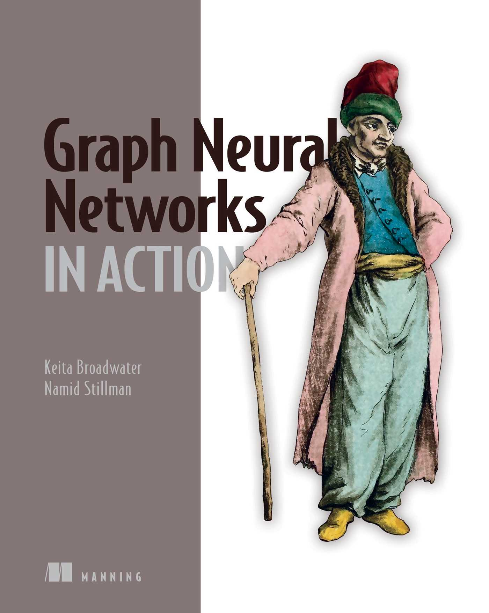

Graph Neural Networks in Action

A practical guide to powerful graph-based deep learning models! Learn how to create modern graph neural networks for recommendation systems, molecule modeling, and more. In *Graph Neural Networks in Action*, you will learn how to:
Train and deploy a graph neural network
Create node embeddings
Use graph neural networks at scale for very large datasets
Create a graph data pipeline
Design a graph data schema
Understand the classification of graph neural networks
Manage graph data with NetworkX
*Graph Neural Networks in Action* teaches you how to build powerful deep learning models for processing graph data.
Authors: Keita Broadwater
Pages: 350
View the book
Rating: 4.8/5 (540 reviews)
Vector Neural Networks
We are on the brink of a renaissance in neural network research. A new chapter in geometric deep learning is emerging. It represents innovation and suggests untapped potential. The foundation is shifting toward vectors. This change is not a mere evolution; it is a bold step into a new era. In this era, neural networks gain an intuition of the geometry of our world. This work focuses on Vector Neural Networks (VNNs). VNNs serve as a foundation that pushes us toward intelligent and interconnected systems, reflecting the complex dynamics of the real world, leading us toward Artificial General Intelligence (AGI).
Authors: Scott D. Seto
Pages: 286
View the book
Rating: 4.6/5 (360 reviews)
AI Foundations of Neural Networks
Explore the fascinating world of artificial intelligence with *AI Foundations of Neural Networks*. This comprehensive guide demystifies the complex concepts of neural networks, offering a clear and accessible path to understanding the foundational principles that power modern AI systems. From the basics of neural networks to advanced architectures, this book is designed to provide a complete grounding in deep learning for readers of all knowledge levels.
Authors: Jon Adams
Pages: 68
View the book
Rating: 4.34/5 (290 reviews)
But what is a neural network?
There are two great things about this book. First, it is available for free, so consider donating to Nielsen with me if you get something out of it. And second, it focuses on walking you through some code and data you can download yourself, covering the same example I present in this video. Long live active learning!
Contributors: 3Blue1Brown
Duration: 18:39
View the lecture
Rating: 4.7/5 (220 reviews)
Neural Networks Explained in 5 minutes
Neural networks mimic the behavior of the human brain, enabling computer programs to recognize patterns and solve common problems in artificial intelligence, machine learning, and deep learning. Chief Inventor Martin Keen makes some key points about neural networks in just 5 minutes.
Contributors: IBM Technology
Duration: 04:31
View the lecture
Rating: 4.8/5 (180 reviews)
The Essential Main Ideas of Neural Networks
Neural Networks are one of the most popular machine learning algorithms, yet also one of the most misunderstood. People often call them "black boxes," but this is far from true. In this video, I break down each component and show how it works, step-by-step, using simple math that stays true to the algorithm. By the end of the video, you will have a deep understanding of what Neural Networks actually do.
Contributors: StatQuest with Josh Starmer
Duration: 18:53
View the lecture
Rating: 4.6/5 (150 reviews)